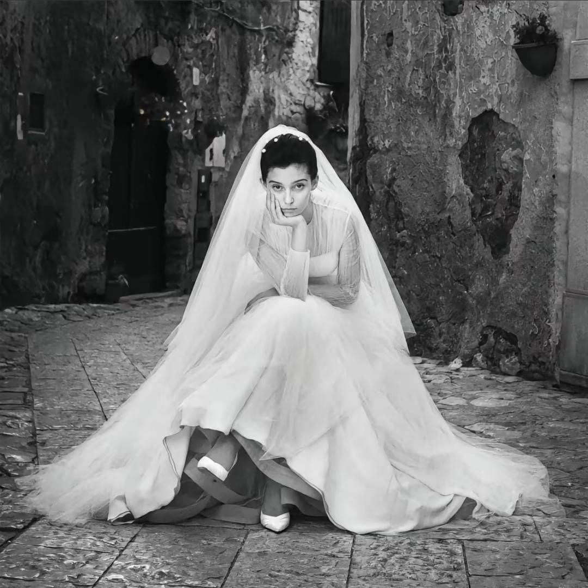

我的电影世界
通过电影寻找生活的诗意与浪漫
电影于我而言，不仅是欣赏艺术，更是体验人生。尤其喜欢那些关于爱情、灵魂连接的故事，它们总能让我思考生活的意义与浪漫的真谛。我相信，就像电影中那些偶然的相遇一样，我也在等待着与我的灵魂伴侣相遇的那一刻。
最爱的电影系列

爱在黎明破晓前
1995
Jesse和Celine在维也纳的一夜邂逅，他们漫步在城市街头，分享彼此的想法、梦想和对生活的感悟。这部电影展现了偶遇的美丽和瞬间连接的力量。

爱在日落黄昏时
2004
九年后，Jesse已成为一名作家，为宣传自己的新书来到巴黎，在书店邂逅了Celine。他们在巴黎街头漫步，回忆过去，分享生活，思考如何弥补错过的九年时光。电影探讨了时间、后悔和第二次机会的主题。

爱在午夜降临前
2013
二十年的故事，Jesse和Celine现已成为一对夫妻，面对关系中的挑战和变化。这部电影展现了爱情的复杂性和长期关系的真实。

爱乐之城
2016
一个爵士钢琴家和一个有抱负的女演员在洛杉矶相遇，他们相爱并互相支持彼此的梦想。这部电影探讨了爱情与梦想之间的平衡。
"If you want real experiences, that's the price you pay."
— Jesse, 爱在黎明破晓前
最爱的剧集

我的天才女友
2018-现在
这部HBO出品的意大利剧集改编自Elena Ferrante的畅销小说《那不勒斯四部曲》，讲述了Elena和Lila两位女孩从童年到成年的友谊故事。在战后的那不勒斯贫民区，她们相互支持、竞争，共同面对生活的挑战和社会的变革。